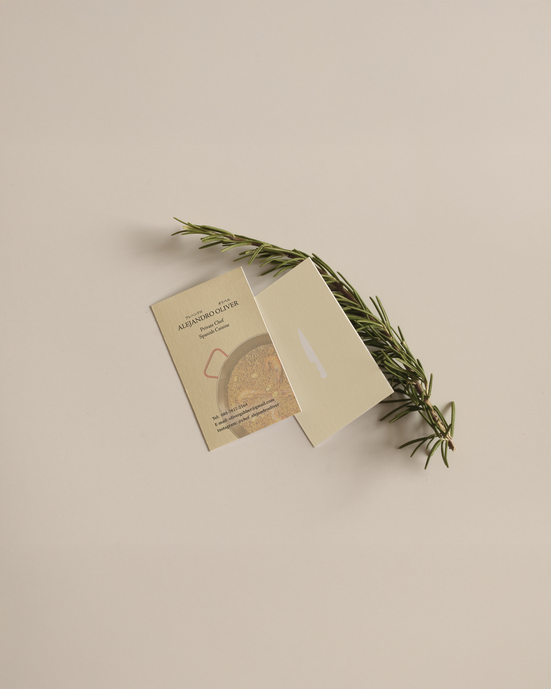

名刺・カード

名刺デザイン
料理人の方の活動を紹介する名刺を制作しました。料理写真と落ち着いたベージュ系の色を組み合わせ、お料理の魅力とあたたかみが伝わるデザインにしています。
名前、肩書き、連絡先をすっきりと整理し、小さな紙面でも必要な情報が読み取りやすいようにしました。もう一方の面はモチーフを控えめに配置し、余白を生かした印象にまとめています。
作ったもの一覧に戻る

料理人の方の活動を紹介する名刺を制作しました。料理写真と落ち着いたベージュ系の色を組み合わせ、お料理の魅力とあたたかみが伝わるデザインにしています。
名前、肩書き、連絡先をすっきりと整理し、小さな紙面でも必要な情報が読み取りやすいようにしました。もう一方の面はモチーフを控えめに配置し、余白を生かした印象にまとめています。
作ったもの一覧に戻る